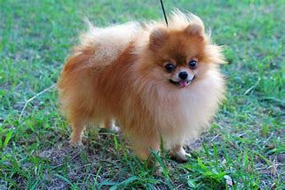
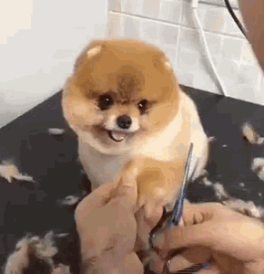

El diminuto pomerania descata por su caracter y simpatia. Es la raza mas pequeña de todos los spitz. Parece un zorrito en miniatura, con un manto superior de pelaje largo y tieso y un manto inferior muy denso, que le da el aspecto de una bolita de peluche, A demas de parecer adorable, el pomerania tambien tiene una personalidad encantadora; siempre esta sonriendo y haciendo reir a sus amigos humanos. Por tanto, si lo necesitas es un compañero activo y vivaracho, no busuqes mas: el pomerania es perfecto para ti.
Una de las caracteristicas que hacen unico al pomerania es su cola voluminosa y emplumada, que se en rolla sobre el lomo y le hace paracer aun mas una bolita de peluche, por lo que respecta como tal, el pomeranea puede presentar colores muy diversos, de naranja a rojo, los mas frecuentes, pasando por el azul, blanco o particolor (blanco con manchas de otros muchos colores)
Aun que paresca mentira, casi seguro que el pomerania desciende de los perros que tiran de los trineos en el Artico y esta emparentandotambien con el keeshond, el cazador de alces noruegos y el samoyedo. Este perrito se crio a proposito con reducciones graduales del tamaño, bien, cuando llego al Reino Unido con la reina Carlota, originaria de Alemania, era muy diferente del pomerania que conocemos hoy en di, ya que era de color blanco y mucho mas grande (entre 9 y 14 kg). Pronto se hizo muy popular, especialmente entre la realeza, de manera, que, cuando la reina Victoria visito Florencia y se encontro alli con variedades mucho mas pequeñas de la raza, se las llevo consigo. La reina continuo criandolos y los expuso en Crufts de 1891, donde se llevo el premio al mejor de su raza. En los años posteriores al fallecimiento de la reina en 1901 prosiguio la cria selectiva de tamaños mas pequeños, hasta llegar al diminuto perrito que conocemos hoy, y los tamaños mas grandes desaparecieron del Reino Unido.
Preguntas mas frecuentes
¿Es el pomeranea un perro afable?
El pomeranea es una mascota exelente, ya que es muy jugeton e inteligente, tiene un gran afan por agradar y le encanta la atencion
¿Ladra mucho?
Si, el pomeranea suele ladrar con bastante frecuencia
¿Es el pomeranea un perro tranquilo?
Si, el pomeranea puede ser tranquilo y de trato facil, sobre todo, a medida que se hace mayor
Cosas que hay que saber antes de tener un pomeranea
Entre muchos otros aspectos, es importante tener en cuenta que el pomeranea rebosa energia y es muy aventurero, asi que, como dueño, deberias invertir mucho tiempo y esfuerzo solo mantener su ritmo

Para ser un perro tan pequeño, el pomerania tiene un gran pelaje, con un tupido manto inferior. EL acicalamiento diarioseria ideal, pero, en cualquier caso, no debe hacerse menos de dos veces por semana , para evitar que el pelo se enrede y mantenerlo salubable. Lo ideal es peinarlo con un peine de puas anchas, porque los peines finos o los cepillos muy duros pueden dañarle el pelo facilmente. De vez en cuando hay que recordarle el pelo alrededor del pie
Es un perro muy vivaracho y rebosante de energia que permanece fiel a su familia, aunque generalmente, creara un vinculo con una perosna. El pomeranea adora que lo cuiden y pasar tiempo con su amado dueño, pero es importante dejarle la oportunidad de comportarse como un perro de verdad. Es un exelente perro guardian, ya que es bastante hablador y avisara ante cualquier cosa poco abitual...o, mas bien, ante practicamente cualquier cosa. Pese a su naturaleza amable y cariñosa y su actitud sorprenderte entusiasta hacia la vida, hay que tener cuidado, porque denajo de todo ese pelo se esconde un perrito minusculo y bastante fragil
Los pumeranea con su personalidad vibrante y su pelaje ensponjoso, son una raza de jugete muy querida y conocida por su encanto y compañerismo. Sin embargo, estan predispuestos a varios problemas como luxacion rotuliana, colapso traqueal, enfermedad dental, alopecia, hipotiroidismo entre otras